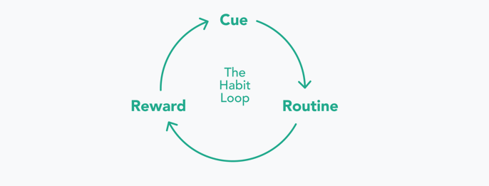

Prototyping
HMW introduce people to eco-friendly habits and alternatives in a relaxed way, acknowledging the positive impact of their actions?
Concept
Understanding the formation of habits was crucial for this project, thus I was inspired by some psychology articles and by the book The Power of Habit, where
Charles Duhigg simplifies the habit formation in a 3-step neurological process based on a cue, an action and a reward.
I applied this knowledge to the app by creating:
a dashboard featuring the actions,
a feedback page to reward the user,
a social feed and a gamification element, to work as cues.

After defining the information architecture and creating a user flow to understand
how to organize the content, I explored different visual approaches.
When creating the wireframes, I focused on limiting the cognitive load of the users, by
showing only contextual information and disclosing it progressively
Scroll/swipe left to see the images, click to zoom